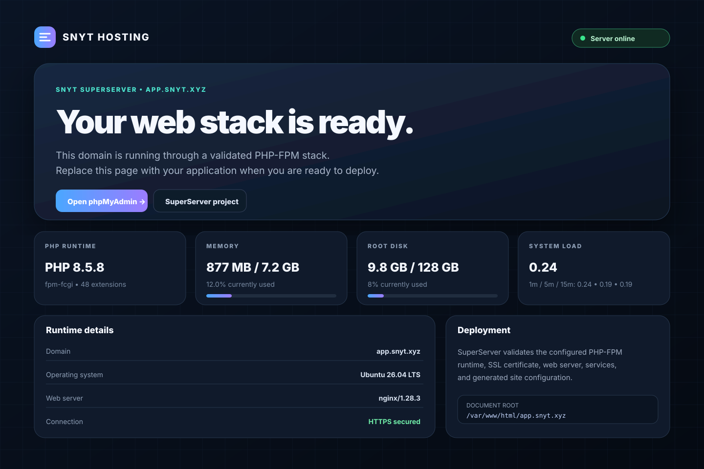

Apache or Nginx
Choose traditional hosting compatibility or a lightweight reverse-proxy-ready stack.
SuperServer installs and validates Apache or Nginx, PHP 8.1–8.5, MariaDB, Redis, developer tools, Let’s Encrypt, and CrowdSec security through one guided wizard.
Every choice is collected before installation starts. After approval, the installer runs without interrupting you for more answers.
Choose traditional hosting compatibility or a lightweight reverse-proxy-ready stack.
Install PHP 8.1 through 8.5 side by side with FPM and per-domain runtime selection.
Deploy MariaDB, Redis, optional phpMyAdmin, and verified service health checks.
UFW, Let’s Encrypt, CrowdSec firewall enforcement, and optional Nginx AppSec/WAF.
Arrow keys, Space checklists, a final plan review, and zero mid-install questions.
Validated sources for PHP, MariaDB, Redis, Docker, Node.js, Certbot, and Composer.
Use super-server for health and super-sdomain for new sites.
Services, FPM listeners, web runtime, SSL, and security components are tested.
The stable release completed a full Ubuntu 26.04 installation with Nginx, four supported PHP branches, MariaDB, Redis, Let’s Encrypt, and CrowdSec enforcement.
/run/php/.Run the tagged stable installer as root on a clean supported server. The website automatically tracks the latest GitHub release.
sudo -i cd /root curl -fsSL https://raw.githubusercontent.com/abdomuftah/SuperServer/v3.5.2/SuperServer.sh -o SuperServer.sh chmod 700 SuperServer.sh bash -n SuperServer.sh ./SuperServer.sh
New domains receive a responsive PHP status page showing runtime, resource usage, SSL state, uptime, and deployment paths without exposing credentials.

Download the stable package or follow the complete installation guide.